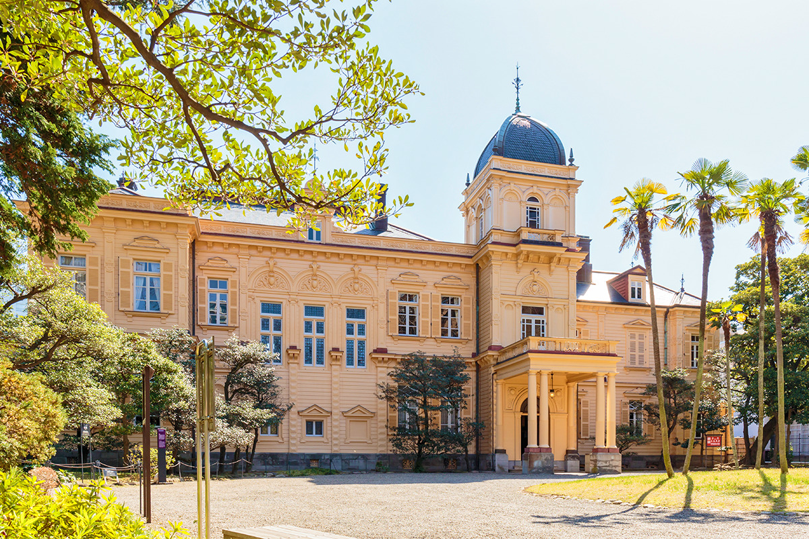
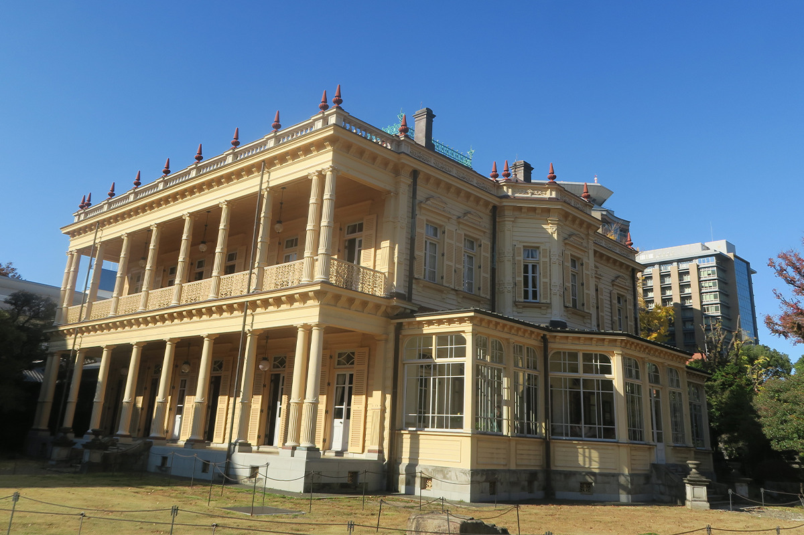
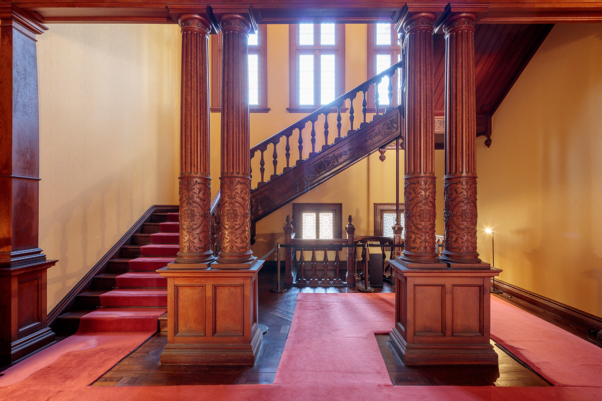
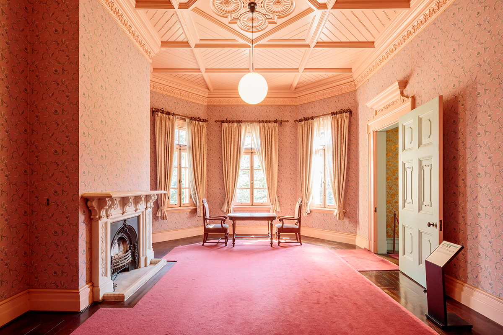
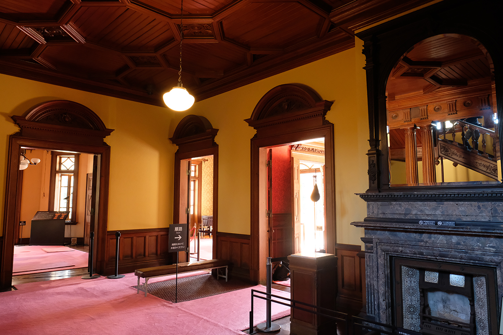
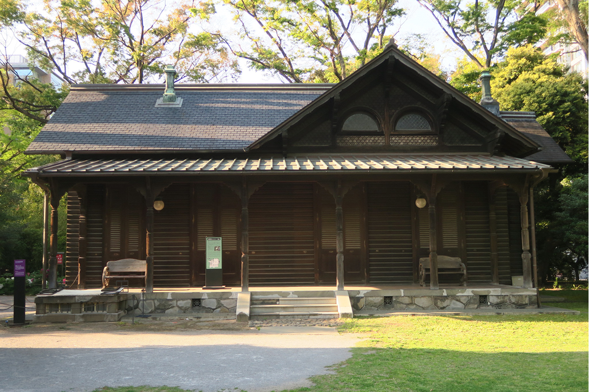
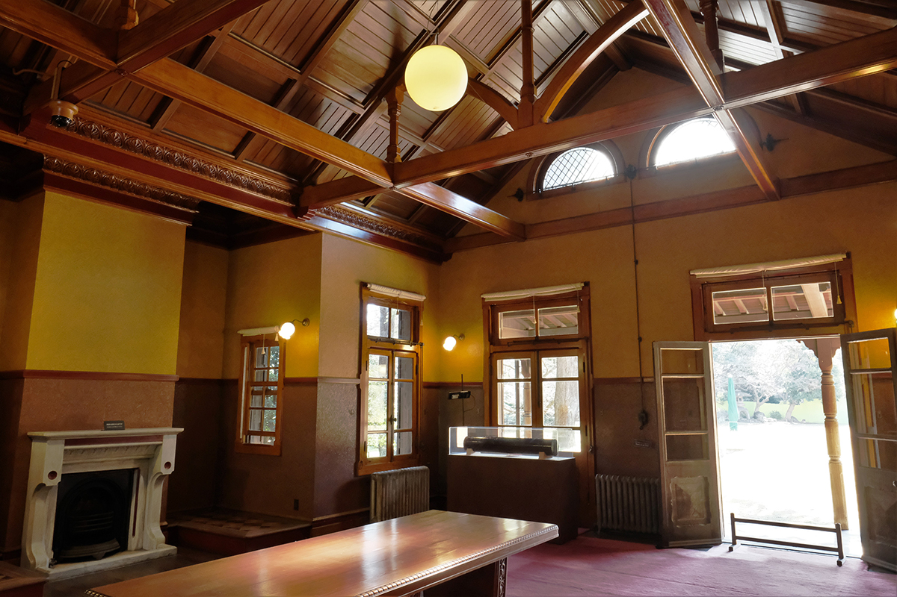
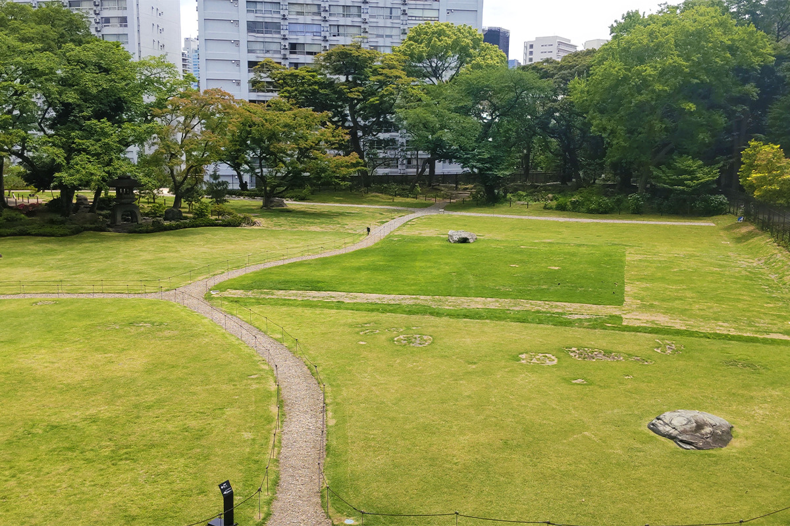
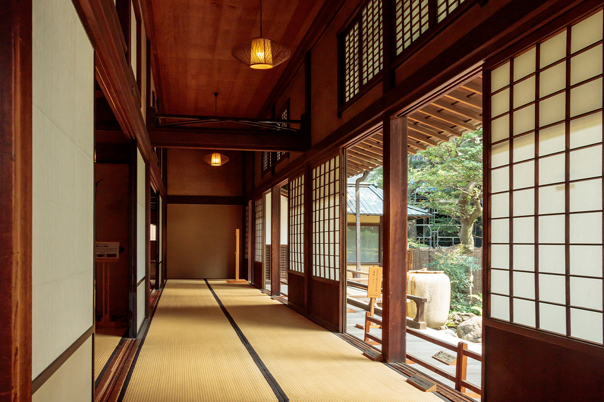
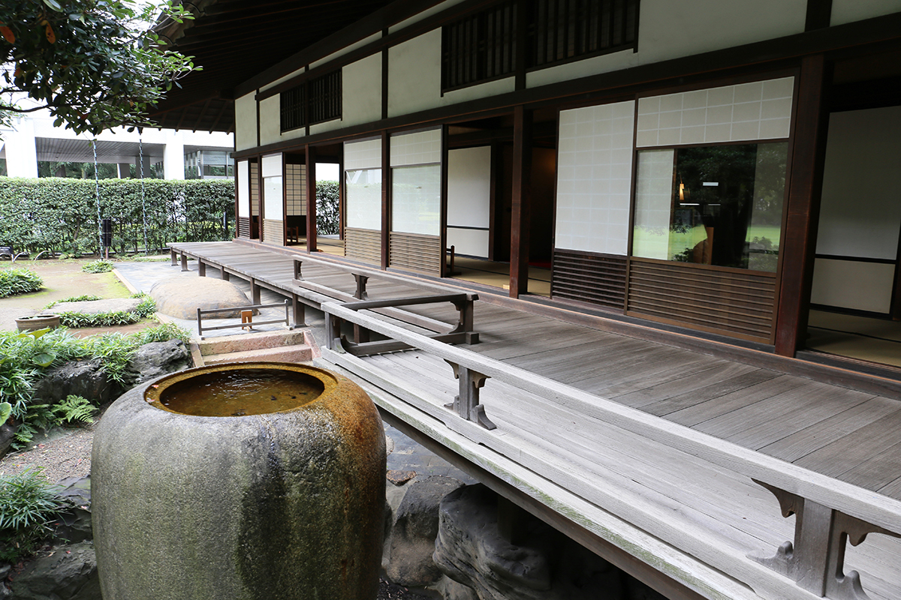

Токио · Юсима · архитектура
Сад и особняк Ивасаки: дом главы «Мицубиси» работы Джозайи Кондера

В нескольких минутах от станции Юсима, рядом с парком Уэно, стоит дом, где жил третий президент «Мицубиси». Западный особняк Джозайи Кондера, японский дом с росписями и широкий газон вокруг вместе охраняются как важная культурная ценность страны.
История
Дом нового времени

Сад Ивасаки находится в трёх минутах ходьбы от станции метро Юсима и в пятнадцати от станции JR Окатимати. От большой усадьбы остались три постройки: западный дом, японский дом и отдельная бильярдная. Все они вместе с газонным садом признаны важной культурной ценностью Японии.
Дом построили в 1896 году как главную резиденцию Хисаи Ивасаки (1865–1955), третьего президента «Мицубиси» и старшего сына её основателя Ятаро Ивасаки (1835–1885). Тогда усадьба занимала около 15 000 цубо, примерно пять гектаров, и на ней стояло до двадцати зданий. До наших дней дошла треть участка и три постройки.
Западный дом спроектировал Джозайя Кондер, англичанин, построивший в Токио музей в Уэно и дворец приёмов Рокумэйкан. Отдельная бильярдная тоже его работа. Японский дом, соединённый с западным, по преданию строил Кидзюро Окава, один из лучших плотников-мастеров своего времени.
После войны усадьбу заняли оккупационные власти. В 1952 году её вернули, она стала государственной собственностью, и здесь работал среди прочего Институт подготовки юристов при Верховном суде. Позже под охрану взяли большой зал японского дома и боковую стену у западного дома, а в 1999 году всю территорию вместе с кирпичной оградой.
Западный дом
Якобинский стиль и американская усадьба
Западный дом деревянный, в два этажа с подвалом. Его украшает декор в духе английского якобинского стиля XVII века, а рядом с ней встречаются мотивы английского Возрождения и исламского искусства. С южной стороны тянется веранда с колоннами: внизу они тосканского ордера, наверху ионического. Пол нижней веранды выложен плиткой английской фирмы Minton, уложенной без швов, а в одной из гостевых комнат второго этажа стены обтянуты кинкаракава-си, тиснёной бумагой под золочёную кожу.

Хисая Ивасаки учился в Америке, в Пенсильвании, и в доме угадывается облик тамошних загородных усадеб. Видно, что Кондер долго обсуждал проект с хозяином. Западный и японский дома стоят рядом и уравновешивают друг друга, и такую пару считают редкостью в мировой истории жилой архитектуры.
Семья Ивасаки жила в японском доме, а западный служил частной резиденцией для приёмов: здесь собирался весь род, обычно раз в год, и устраивали вечера для иностранцев и важных гостей.


Бильярдная в духе швейцарского шале
Бильярдная стоит отдельно, чуть в стороне от западного дома, и в стиле совсем на него не похожа. Её построили как швейцарский горный домик, большую редкость для Японии того времени. Стены напоминают бревенчатые амбары, столбы покрыты насечками, широкая крыша далеко выступает над стенами. Всё это идёт от американской деревянной готики. С западным домом бильярдную соединяет подземный ход, а стены внутри тоже отделаны кинкаракава-си.


Сад
Газон на месте княжеских усадеб

До Ивасаки на этом месте стояли усадьбы двух княжеских родов, в эпоху Эдо и в первые годы Мэйдзи. Сад отчасти повторяет устройство княжеских садов, но, как и дома, соединяет японское с западным. Он сохранил ранний облик японского сада нового времени с открытым газоном. О прошлом напоминают каменная стела эпохи Эдо, чаша для омовения рук перед японским домом и садовые камни. Такое соседство западного и японского дома потом сильно повлияло на японские особняки.
Японский дом
Большой зал из редкого дерева

Японский дом построен в стиле сёин, классическом стиле жилищ самураев и знати. Когда его закончили, он занимал 550 цубо, больше 1 800 квадратных метров, и намного превосходил западный дом. До наших дней дошёл только большой зал, где проходили свадьбы, поминки и другие семейные церемонии. Строил его, по преданию, Кидзюро Окава, возводивший дома многим крупным политикам и предпринимателям.
В нише токонома и на раздвижных дверях сохранились росписи, эскизы к которым, как считается, сделал художник Гахо Хасимото (1835–1908). Жилые комнаты семьи не сохранились. Дом делился на две части: на юге были комнаты Хисаи, его жены и детей, на севере комнаты прислуги, кухня, контора и кладовые. Стоит присмотреться и к дереву: многие породы, из которых сделаны детали, достать в наши дни почти невозможно.

В 2023 году в японском доме работали чайная, где пьют чай с видом на сад, и магазин с закладками, футлярами для карточек и другими вещами из кинкаракава-си. Сад и дом Ивасаки хорошо подходят для неспешной прогулки сквозь историю Эдо, Мэйдзи и Тайсё.
Сад Кю-Ивасаки-тэй
- Адрес
- Токио, район Тайто, Икэнохата, 1-3-45
- Телефон
- +81 3-3823-8340
- Часы работы
- 9:00–17:00 (вход до 16:30)
- Выходные
- с 29 декабря по 1 января; во время мероприятий сад иногда открыт в выходные дни или дольше обычного
- Цены / Вход
- 400 иен, от 65 лет 200 иен; дети младшего школьного возраста и младше, а также школьники средней школы, живущие или учащиеся в Токио, бесплатно
- Как добраться
- около 3 минут пешком от станции Юсима линии метро Тиёда, около 15 минут от станции JR Окатимати. Парковки нет.
- Сайт
- tokyo-park.or.jp